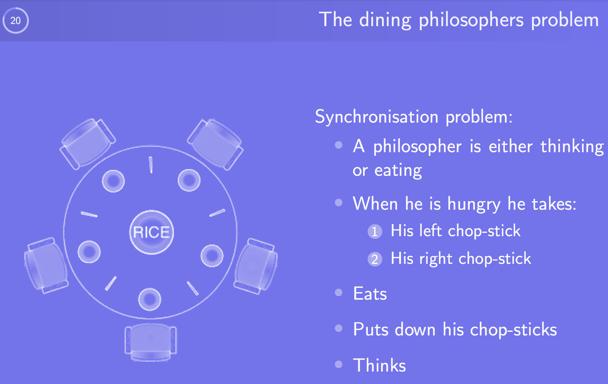
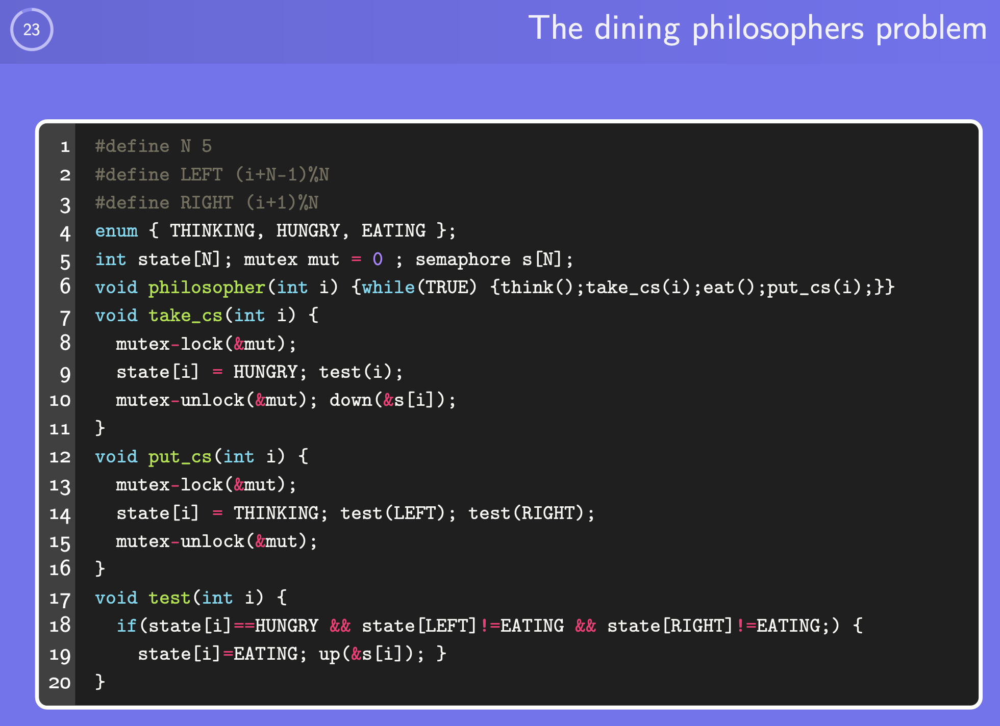

Scheduling¶
1. Scheduler’s Role¶
- Multiple processes competing for CPU time
- When more than one is Ready, scheduler chooses who runs next
- Affects perceived system performance
- Scheduling decisions occur on: Process creation, Process exit / blocking, or I/O completion interrupt
2. Context Switch Overhead¶
Switching tasks is expensive:
- Trap to kernel mode
- Save current CPU state (registers, memory map)
- Select new process & restore its state
- Resume execution
Too many switches waste CPU time.
3. Process CPU Behavior¶
Two typical categories:
| Type | Behavior | Resource Usage | Notes |
|---|---|---|---|
| CPU-bound | Long computations | Mostly CPU | Few I/O wait times |
| I/O-bound | Short bursts | Mostly I/O | Spend time waiting |
Modern systems become more I/O-bound as CPUs get faster.
4. Preemptive vs Non-Preemptive Scheduling¶
| Strategy | CPU Ownership Ends When… | Pros | Cons |
|---|---|---|---|
| Preemptive | Quantum expires or higher-priority arrival | Better for interactivity | More context switch overhead |
| Non-Preemptive | Process blocks or exits | Simpler, lower overhead | Bad response time if long jobs exist |
Preemption requires timer interrupt/hardware support.
5. Scheduling Goals¶
| System Type | Major Metrics |
|---|---|
| All systems | Fairness, CPU balance, enforce policy |
| Interactive | Response time, proportionality |
| Batch | Throughput ↑, turnaround time ↓, CPU utilization ↑ |
| Real-Time | Meet deadlines, predictability (NO data loss) |
6. Common Scheduling Algorithms¶
6.1 First-Come First-Served¶
- Non-preemptive
- Simple FIFO queue Problem: Long jobs block short ones (convoy effect)
6.2 Shortest Job First¶
- Non-preemptive, requires job length knowledge
- Minimizes average turnaround time
- Not realistic → runtime unknown
Risk: Starvation of long jobs
6.3 Round Robin¶
- Preemptive, equal quantum for each process
- Very common in interactive systems
- Choice of quantum matters:
- Too small → context switching overhead ↑
- Too large → degenerates to FCFS
6.4 Priority Scheduling¶
- Higher priority tasks run first
- Can combine with RR per priority class
- Starvation possible → fix: aging
6.5 Lottery Scheduling¶
- Random scheduling based on # of tickets
- Dynamic, flexible priority control
- Good when fairness with weighted share is desired
6.6 Earliest Deadline First (EDF)¶
- Real-time focused
- Run task with closest deadline first Hard requirement: process must announce deadline
7. Policy vs. Mechanism¶
- Scheduling mechanism: how scheduling is done
- Scheduling policy: who should run + priority rules
- Parent process can set children priority parameters → avoids assumptions
8. Scheduling Threads¶
User-level vs Kernel-level scheduling
- User level threads: Kernel unaware → user scheduler only
- Kernellevel threads: Kernel actively chooses runnable threads
- Determines runnable interleavings (A1, B1, A2, …)
9. Dining Philosophers¶
(Classic Synchronization Problem)
Illustrates deadlock + starvation risks

- Five philosophers share chopsticks
- Need mutual exclusion on chopsticks

9.1 Problem Recap¶
- Deadlock : All philosophers pick the left chopstick and wait forever
- Starvation : A philosopher may never get a chance to eat
- Concurrency control : Neighbors must not eat simultaneously
9.2 Key Ideas¶
| Component | Purpose | Effect |
|---|---|---|
state[i] |
Each philosopher’s state (THINKING / HUNGRY / EATING) | Allows control logic on neighbors |
mut (mutex) |
Protects access to shared state | Ensures mutual exclusion when modifying states |
s[i] (semaphore per philosopher) |
Controls who gets permission to eat | Prevents neighbors from eating simultaneously |
test(i) |
Check if philosopher i can start eating |
Enforces safe conditions |
9.3 Execution Flow¶
9.3.1 When Philosopher Gets Hungry → take_cs(i)¶
- Lock mutex
- Set state to
HUNGRY - Check if neighbors are eating (
test(i)) - Unlock mutex
- Wait until permission is given (
down(s[i])) → Blocks until chopsticks available
9.3.2 After Eating → put_cs(i)¶
- Lock mutex
- Set state back to
THINKING - Signal neighbors to try eating (
test(LEFT)+test(RIGHT)) - Unlock mutex
9.4 Solution: test(i)¶
if (state[i] == HUNGRY &&
state[LEFT] != EATING &&
state[RIGHT] != EATING) {
state[i] = EATING;
up(&s[i]);
}
This guarantees:
- A philosopher only eats if both neighbors are not eating
- Unlocks semaphore for only one philosopher at a time
9.5 How It Solves the Classical Issues¶
| Issue | How It is Prevented |
|---|---|
| Deadlock | No circular wait: philosopher only grabs both chopsticks when allowed; otherwise releases/not blocks while holding one |
| Starvation | When a philosopher stops eating, neighbors are **immediately tested and possibly signaled → fairness |
| Race conditions on state | Protected by mutex (mut) |
| Neighbors eating simultaneously | test() explicitly checks left & right philosopher states |
© Jeongsoo Pang — All rights reserved